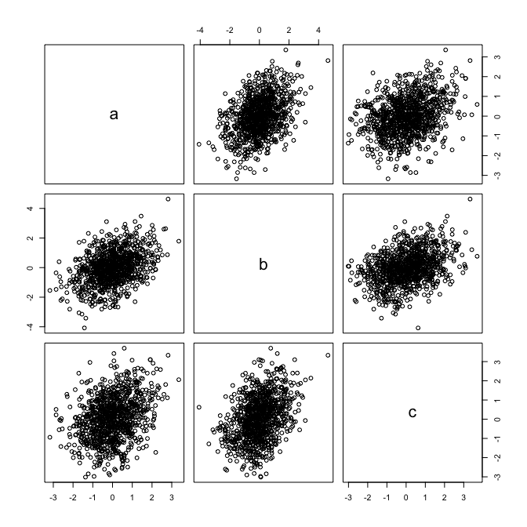

CopulaSimulation.Rmd
library(causl)
#> Loading required package: rje
#> Loading required package: VineCopulaThe former main function for simulating data is
causalSamp(). Suppose we wish to have
with
,
,
and
.
Then we set:
pars <- list(z = list(beta = 0, phi=1),
x = list(beta = c(0,0.5), phi=1),
y = list(beta = c(0,0.3), phi=1),
cop = list(beta = matrix(c(0.5,0.25), ncol=1)))Note that the copula parameters have been selected for a linear predictor of the form , and the default link function for the Gaussian copula is .
Then we simulate as follows:
set.seed(124) # for consistency
dat <- causalSamp(1e3, formulas=list(z~1, x~z, y~x, ~x), family=rep(1,4), pars=pars)
pairs(dat)Note that the distribution is as we expect. Regressing on should give a coefficient close to 0.5.
lmXZ <- lm(x ~ z, data=dat)
summary(lmXZ)$coef
#> Estimate Std. Error t value Pr(>|t|)
#> (Intercept) -0.009393264 0.03173042 -0.2960334 7.672662e-01
#> z 0.432896196 0.03251866 13.3122393 2.444127e-37
# lmYX <- lm(y ~ x, data=dat, weights = 1/dnorm(predict(lmXZ)))
# summary(lmYX)Note that it is not necessary to use the standard variable names
z, x and y, but if you choose not
to then you must specify the names you want to use with the
formulas argument.
pars <- list(a = list(beta = 0, phi=1),
b = list(beta = c(0,0.5), phi=1),
c = list(beta = c(0,0.3), phi=1),
cop = list(beta = matrix(c(0.5,0.25), ncol=1)))
set.seed(124)
dat2 <- causalSamp(1e3, formulas=list(a ~ 1, b ~ a, c ~ b, ~ b), family = rep(1, 4), pars=pars)
pairs(dat2)
causalSamp() has various default settings. The copula
,
and the distribution families of
,
and
all default to Gaussian. It over-samples by a factor of 10 so that some
may be rejected later, though this is increased later on if necessary up
to the control parameter max_oversamp (with default value
1000).
We can fit a model using maximum likelihood.
out <- fit_causl(dat, formulas = list(z~1, y~x, ~x))
out
#> log-likelihood: -2831.448
#> z ~ 1
#> est. s.e. sandwich
#> (intercept) -0.00312 0.0309 0.0308
#> residual s.e.: 0.957 0.0429 0.0445
#>
#> y ~ x
#> est. s.e. sandwich
#> (intercept) -0.00959 0.0351 0.0360
#> x 0.29923 0.0312 0.0284
#> residual s.e.: 1.11 0.0496 0.049
#>
#> copula parameters:
#> cop ~ x
#> cop_z_y:
#> est. s.e. sandwich
#> (intercept) 0.426 0.068 0.0651
#> x 0.330 0.056 0.0511We see that the x coefficient in the regression
parameter is correct (even surprisingly so!).
Note that if we allow z to depend upon x we
obtain a biased estimate.
out2 <- fit_causl(dat, form = list(y~x, z~x, ~x))
out2
#> log-likelihood: -2749.974
#> y ~ x
#> est. s.e. sandwich
#> (intercept) 0.0613 0.0334 0.0334
#> x 0.3788 0.0293 0.0270
#> residual s.e.: 1.11 0.0495 0.0489
#>
#> z ~ x
#> est. s.e. sandwich
#> (intercept) 0.00152 0.0285 0.0285
#> x 0.33378 0.0251 0.0250
#> residual s.e.: 0.812 0.0363 0.0357
#>
#> copula parameters:
#> cop ~ x
#> cop_y_z:
#> est. s.e. sandwich
#> (intercept) 0.392 0.0623 0.0597
#> x 0.364 0.0604 0.0571We can also perform maximum likelihood estimation with other parametric families. Suppose that is t-distributed and Gamma distributed. We can simulate with
forms <- list(Z ~ 1, X ~ Z, Y ~ X, ~ 1)
fams <- c(2, 5, 3, 1)
pars <- list(Z = list(beta = 0, phi=1, df=4),
X = list(beta = c(0,0.5)),
Y = list(beta = c(1,-0.3), phi=2),
cop = list(beta = 1))
set.seed(124)
dat <- rfrugalParam(1e3, formulas=forms, family=fams, pars=pars)
#> Inversion method selected: using pair-copula parameterizationThen we can perform maximum likelihood estimation on this data:
(out <- fit_causl(dat, formulas = forms[-2], family = fams[-2], other_pars=list(Z=list(df=4L))))
#> log-likelihood: -3212.27
#> Z ~ 1
#> est. s.e. sandwich
#> (intercept) -0.00179 0.039 0.0384
#> residual s.e.: 1.11 0.0662 0.0684
#>
#> Y ~ X
#> est. s.e. sandwich
#> (intercept) 1.08 0.0684 0.0644
#> X -0.41 0.0844 0.0818
#> residual s.e.: 2.05 0.0752 0.0725
#>
#> copula parameters:
#> cop ~ 1
#> est. s.e. sandwich
#> (intercept) 1.09 0.0642 0.0616